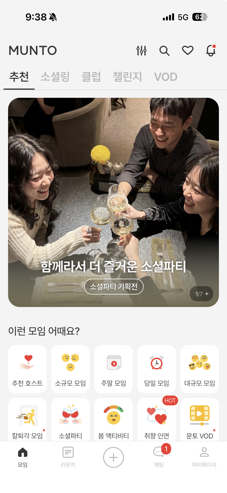
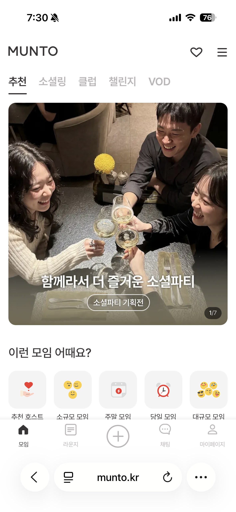
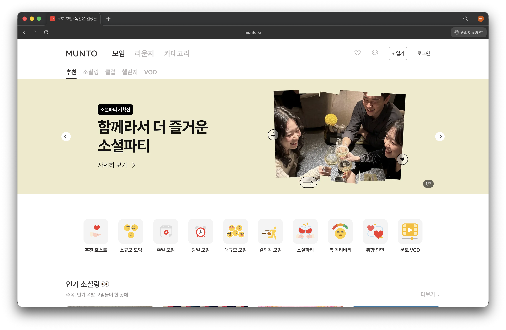

앱 전환 중심 구조를 웹 완결형 사용자 경험으로 재구성한 사례
메인 화면 기준으로 기존 앱과 신규 웹(모바일/데스크톱) 비교



배경
모바일 서비스는 충분히 성장했지만, 웹은 소개 페이지 역할에 머물러 있었습니다. 로그인 상태나 회원 프로필, 결제 같은 실제 서비스 플로우가 웹에는 없었기 때문에 유입 이후 사용자가 머물 이유가 부족했습니다.
문제 인식
앱 소개용 링크 페이지로는 웹 유입을 실제 사용 전환으로 연결하기 어려웠습니다. 웹에서도 로그인, 상태관리, 결제까지 이어지는 완결된 경험이 필요했습니다. 기존 웹은 소개 페이지 중심이어서 실제 서비스 화면에서 필요한 회원 상태, 프로필, 인증 토큰 같은 상태를 다루는 구조가 없었습니다.
개선 방식
- 앱 소개 중심이던 웹을 실제 서비스 진입점으로 바꾸고, 탐색부터 결제까지 이어지는 흐름을 웹 안에서 완결할 수 있도록 재구성했습니다.
- 로그인 상태와 서비스 데이터를 안정적으로 다룰 수 있는 상태 관리 구조를 정리해 주요 화면 경험을 일관되게 맞췄습니다.
- 웹에서 구현한 핵심 화면을 앱에서도 재사용할 수 있도록 연결 구조를 정리해 플랫폼별 기능 중복을 줄였습니다.
결과
- 웹 MAU가 8만에서 12만으로 증가했고, 전체 MAU는 25만+ 규모로 확장됐습니다.
- 앱과 웹의 사용자 흐름을 일관되게 맞춰 기능 확장 시 혼선을 줄였습니다.
- 웹에서 구현한 VOD 경험을 앱 상세/플레이어 화면에서도 재사용할 수 있게 만들어 플랫폼별 기능 중복을 줄였습니다.
- 웹뷰 캐시와 브리지 기반 통신을 통해 앱 안에서도 웹 기능을 자연스럽게 연결할 수 있는 구조를 만들었습니다.
Before
1 웹은 서비스 소개와 앱 다운로드 유도 중심의 랜딩 페이지
2 실제 탐색, 로그인, 결제는 모두 앱에서만 가능
3 웹 유입이 실제 사용 전환으로 이어지기 어려움
4 웹과 앱의 사용자 흐름이 분리되어 이용 경험이 자주 끊김
After
1 서비스 상세 페이지를 실제 서비스 진입점으로 확장
2 React Query 캐시 기반 서버 상태 관리 + 로컬 상태 분리
3 웹뷰 브리지 프로토콜 정리로 앱/웹 흐름을 하나의 경험으로 정렬
4 웹만으로도 탐색부터 결제까지 완성된 사용자 경험 구축